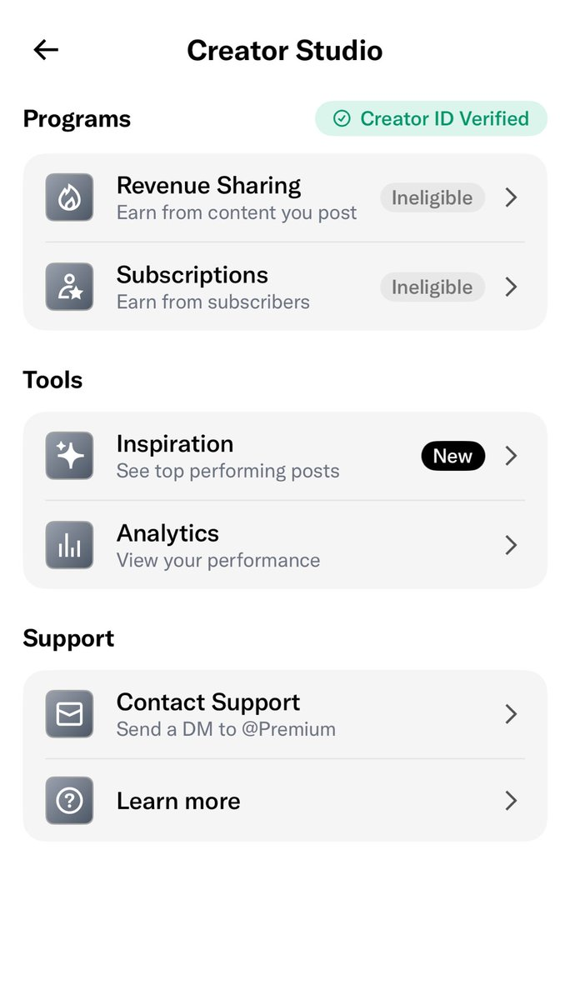

奶昔🥤
@realNyarime
@WangYiNotes 一开始选中国不行，于是我选了美国，看到了签证选项，上传了我的十年美签。。。过了

阿绎 YiOS
@WangYiNotes
终于把 X 的创作者认证搞定了！
之前一直卡在500万流量和地区限制上，
看到推上有很多人晒认证成功了，
有的用护照，
有的用身份证，
可能是目前 X 认证唯一的后门，
不知道后面会不会严控，早点认证安心了，起码防封号做一个保障 hh。
用这个方法实测无门槛秒过， https://t.co/GgX9kVebZy